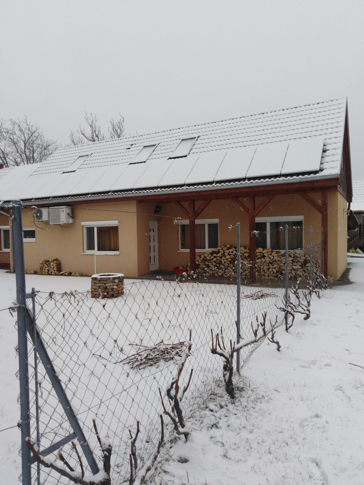
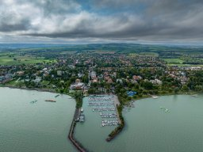
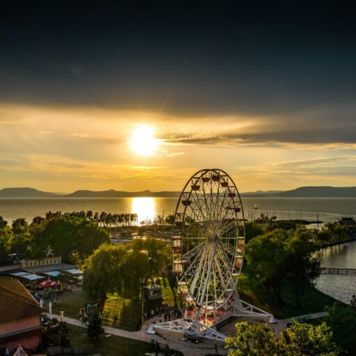

Szüleink vállalkozását folytatva állunk kedves leendő és visszatérő vendégeink szolgálatára — immár több mint 25 éve.
Szüleink vállalkozását folytatva, immár 1999 óta állunk kedves leendő és visszatérő vendégeink szolgálatára. Vállalkozásunk Balatonlelle kertvárosi, csendesebb nyaraló övezetében található, mindössze 700 méterre a parttól és a központi strandoktól (Napfény – Szabad Strand) is.
Éttermünk és vendégházaink négy, egymás melletti telken állnak, összesen 4000 m² területen. Minden vendégházhoz és apartmanhoz saját kertrész tartozik, amelyet élő szőlőlugas választ el a szomszédos vendégháztól vagy apartmantól — így mindenki megőrizheti a nyugalmát, mégis közel van minden közös szolgáltatáshoz.
Szállásaink megtekintése

Autóval érkező vendégeink zárt parkolóban állhatnak meg: a Zoltán Vendégház, a Zoltán Kis Vendégház és a Márta Vendégház közös parkolót használ, a Krisztina Vendégháznak pedig saját parkolója van.

A Zoltán Vendégház és a Zoltán Kis Vendégház közötti önálló telken alakítottuk ki a közös focipályát, a gyerekhintát és a medencét — mindenki számára elérhetően.

A játszótér és a medence úgy közelíthető meg, hogy közben nem kell átmenni egyik vendégház vagy apartman saját kertrészén sem — mindenki élvezheti a maga nyugalmát.
A vendégházainkhoz tartozó kis kerti kapun át pár lépés a Bögre Csárda Étterem, ahol à la carte étkezéssel várjuk vendégeinket.

Esti hangulat
Balatoni naplemente Otthonos belső terekSaját kertrészek
Otthonos belső terekSaját kertrészekNézze át mind a kilenc apartmant, és válassza ki az Önöknek legjobban megfelelőt.